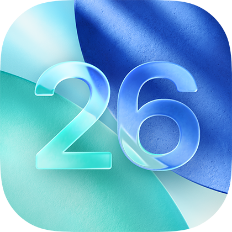

26.6 RC - 21 July 2026This website is not for profit. All software are from the internet and is intended to help users find the resources they want, facilitating categorization and searching. If any content on this website infringes upon your rights, please email apkipasave@gmail.com, and we will remove the copyrighted content immediately.